Git Version Control System
This section will introduce Git, a distributed version control system, and cover basic commands for managing repositories.
Concept Explanation
Git is a distributed version control system used to track changes in files and collaborate on development.
Parameter Explanation
- 🏗️
git init: Initializes a new Git repository. - 📥
git clone: Clones a remote repository. - ➕
git add: Adds files to the staging area. - 💾
git commit: Commits changes. - 📝
-m: Adds a commit message. - 🚀
git push: Pushes local commits to a remote repository.
Practical Examples
- 🎯 Use
git initto initialize a new repository. - 📦 Use
git clone <repo>to clone a remote repository. - ✨ Use
git add .to add all changes to the staging area. - 💫 Use
git commit -m "Initial commit"to commit changes. - 🔼 Use
git push origin mainto push to a remote repository. - Delete Branches
🚀 Recommended Practices
1️⃣ To delete only the remote branch:
git push origin --delete branch-name2️⃣ To update local remote branch list:git fetch --prune3️⃣ To delete a GitHub remote branch: Delete directly from GitHub's "Branches" page 4️⃣ If deletingmain: Ensure a newmainis created before executing the deletion
Test Questions
- How do you initialize a new Git repository?
- Which command is used to clone a remote repository?
- How do you commit changes and add a commit message?
Git 版本控制系统
概念的解释
Git 是一个分布式版本控制系统，用于跟踪文件的更改和协作开发。
参数的解释
- 🏗️
git init：初始化一个新的 Git 仓库。 - 📥
git clone：克隆远程仓库。 - ➕
git add：添加文件到暂存区。 - 💾
git commit：提交更改。 - 📝
-m：添加提交信息。 - 🚀
git push：推送本地提交到远程仓库。 git merge --squash：将指定分支的更改合并到当前分支，但不自动创建合并提交。合并的更改会被暂存，用户需要手动创建提交。git cherry-pick：从远程仓库中提取指定的提交并应用到本地。git rebase：git rebase是一个用于将一个分支的更改应用到另一个分支之上的命令。它常用于线性化提交历史，保持历史的简洁性和可读性。在使用git rebase时，Git 会把当前分支从其基础分支“移出”，并将其应用到新的基础之上。需要注意的是，rebase 会改变提交历史，因此在共享分支上使用时要谨慎。

Git 文件状态详解：从 Untracked 到 Committed
在使用 Git 进行版本控制时，文件会经历不同的状态。理解这些状态有助于高效管理代码，并避免丢失重要更改。本文将详细介绍 Git 的几种文件状态，并总结如何在命令行和 VSCode 中查看和操作它们。
Git 文件的几种状态
在 Git 中，文件的状态主要有以下几种：
| 文件状态 | 说明 | 终端查看方式 | VSCode 查看方式 |
| --- | --- | --- | --- |
| Untracked（未跟踪） | Git 未跟踪的新文件，未添加到暂存区 | git status | Source Control 面板，标记为 U（Untracked） |
| Modified（已修改） | 已跟踪的文件被修改，但未添加到暂存区 | git status / git diff | Source Control 面板，标记为 M（Modified） |
| Staged（已暂存） | 修改后的文件已添加到暂存区，等待提交 | git status / git diff --cached | Source Control 面板，出现在 Staged Changes 标记为 A (Added) |
| Committed（已提交） | 文件更改已提交到本地 Git 仓库 | git log / git show
Untracked vs Modified：两者的区别 Untracked（未跟踪） 和 Modified（已修改） 是 Git 初学者经常混淆的两个状态。
| 状态 | 是否被 Git 追踪？ | 是否已 git add？ | 是否已 git commit？ |
|---|---|---|---|
| Untracked（未跟踪） | ❌ 否 | ❌ 否 | ❌ 否 |
| Modified（已修改） | ✅ 是 | ❌ 否 | ❌ 否 |
举例说明
- Untracked 文件示例
new_file.txt 还没有被 Git 追踪。**
- Modified 文件示例
new_file.txt 已被 Git 追踪，但内容被修改了。**
如何转换文件状态？
| 目标状态 | Git 操作命令 | VSCode 操作方式 |
|---|---|---|
| Untracked → Staged | git add |
选中文件，点击 + |
| Modified → Staged | git add |
选中文件，点击 + |
| Staged → Committed | git commit -m "message" | 输入提交信息后点击 ✓ |
| Modified → Unmodified（撤销修改） | git restore |
右键文件，选择 Discard Changes |
| Staged → Modified（取消暂存） | git reset HEAD |
右键文件，选择 Unstage |
| Deleted → 还原删除 | git checkout -- |
右键文件，选择 Restore |
| Ignored → 追踪文件 | 编辑 .gitignore 文件，删除对应规则 | 在 .gitignore 中移除对应文件规则 |
VSCode 中如何查看 Git 文件状态？
- 打开 Source Control（源代码管理）面板
-
快捷键
Ctrl+Shift+G（Windows / Linux）或Cmd+Shift+G（Mac）。 -
未跟踪、已修改、已暂存的文件会在面板中显示。
-
查看文件状态
-
U（Untracked） ：新文件，未添加到 Git。
-
M（Modified） ：已修改但未暂存。
-
A（Added） ：已添加到暂存区。
-
D（Deleted） ：文件被删除。
-
R（Renamed） ：文件被重命名。
-
点击文件查看更改
-
直接点击文件可以看到 修改前后对比（diff） 。
-
提交更改
-
选中已暂存的文件，输入提交信息后点击 ✓（提交） 。
-
查看 Git 历史
- 使用 GitLens 或 Git Graph 扩展插件，方便可视化历史提交和变更。
总结
- Untracked 文件是新的，Git 不跟踪，必须 git add 后才能管理。
-
Modified 文件是已经被 Git 跟踪的，但有新的修改未
git add。 -
Staged 文件已经
git add，等待git commit。 -
Committed 文件已经提交到本地仓库，可以用
git log查看历史。 -
在 VSCode 的 Source Control 面板中，可以直观地查看和管理 Git 文件状态。
Git flow best practice

Git Flow 是一个基于分支的软件开发工作流程，它定义了一组严格的分支操作规则。主要包含以下分支：
- Main/Master 分支
- 存储官方发布历史
- 只包含稳定的、已发布的代码
-
每个提交都应该有一个版本标签（tag）
-
Develop 分支
- 主要的开发分支
- 包含最新的开发特性
- 所有特性分支都从这里分出
-
当开发完成时，合并回 main 分支
-
Feature 分支
- 用于开发新功能
- 从 develop 分支创建
- 命名规范：feature/功能名
-
完成后合并回 develop 分支
-
Release 分支
- 准备发布新版本时创建
- 从 develop 分支创建
- 命名规范：release/版本号
- 只修复 bug，不添加新功能
-
完成后同时合并到 main 和 develop
-
Hotfix 分支
- 用于修复生产环境的紧急问题
- 从 main 分支创建
- 命名规范：hotfix/问题描述
- 完成后同时合并到 main 和 develop
工作流程：
- 开发新功能：
git checkout develop
git checkout -b feature/new-feature
# 开发完成后
git checkout develop
git merge feature/new-feature
- 准备发布：
git checkout develop
git checkout -b release/1.0.0
# 修复 bug 后
git checkout main
git merge release/1.0.0
git checkout develop
git merge release/1.0.0
git tag -a v1.0.0
- 紧急修复：
git checkout main
git checkout -b hotfix/critical-bug
# 修复后
git checkout main
git merge hotfix/critical-bug
git checkout develop
git merge hotfix/critical-bug
git tag -a v1.0.1
注意事项：
- 保持 main 分支稳定，只合并已测试的代码
- develop 分支应该始终包含最新的开发代码
- feature 分支应该定期与 develop 同步
- release 和 hotfix 分支需要同时合并到 main 和 develop
- 每次发布都要打上版本标签
实践的例子
1. workflow simulation
- 在
main创建一个分支zhangwei/feature/test：
- 在
zhangwei/feature/test上进行几个实验性的 commit：
# 修改文件并提交
mkdir experiment
echo "Experiment 1" >> experiment/experiment.txt
git add experiment/experiment.txt
git commit -m "Add experiment 1"
echo "Experiment 2" >> experiment/experiment.txt
git add experiment/experiment.txt
git commit -m "Add experiment 2"
- 在
main创建一个正式分支zhangwei/feature/a：
- 把
zhangwei/feature/test上的工作复制到zhangwei/feature/a上：
git checkout zhangwei/feature/a
git merge --squash zhangwei/feature/test
git commit -m "Integrate experimental features"
git push
- 进行 merge request：
- 提交
zhangwei/feature/a到远程仓库并创建 merge request。
- 进行 merge review 并合并 merge request：
- 在代码评审通过后，合并
zhangwei/feature/a到main。
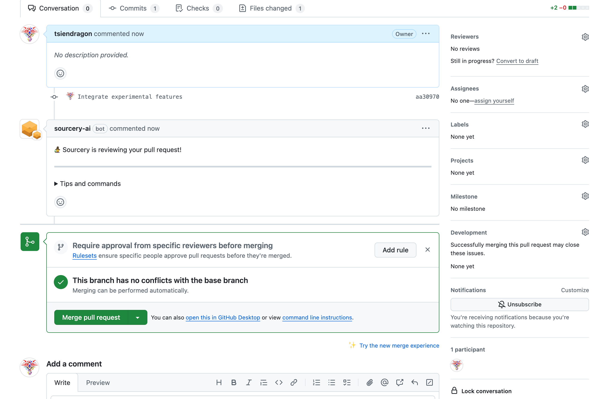
2.use git stash to work cross branches
- 在
zhangwei/feature/a分支上工作时，突然需要切换到xiaohong/feature/b修复bug：
git checkout xiaohong/feature/a
# 在 zhangwei/feature/a 上进行工作
echo "Feature A work in progress" >> experiment/feature_a.txt
git add experiment/feature_a.txt
# 需要切换分支，但工作还未完成，使用 stash 保存
git stash save "feature A work in progress"
# 切换到 xiaohong/feature/b 分支
git checkout xiaohong/feature/b
# 在 xiaohong/feature/b 上修复 bug
echo "Bug fix in feature B" >> experiment/feature_b.txt
git add experiment/feature_b.txt
git commit -m "Fix bug in feature B"
- 现在需要立即提交
xiaohong/feature/a上的工作， 并完成手头 feature/b 的工作
# xiaohong/feature/b 上的新工作
echo "New task in feature B" >> experiment/feature_b.txt
git add experiment/feature_b.txt
# 保存 xiaohong/feature/b 的工作
git stash save "feature B new task"
# 切回 xiaohong/feature/a 并恢复之前的工作
git checkout xiaohong/feature/a
git stash list # 查看所有 stash
git stash pop stash@{1} # 恢复最近的 stash（feature A 的工作）
git status
>> ...
>> modified: experiment/feature_a.txt
>> ...
# 完成 xiaohong/feature/a 的工作并提交
git add experiment/feature_a.txt
git commit -m "Complete feature A work"
- 返回
xiaohong/feature/b继续工作：
git checkout xiaohong/feature/b
git stash list
>>>stash@{0}" On xiaohong/feature/b: feature B new task"
git stash pop # 恢复 feature B 的工作
# changes 里面会出现 experiment/feature_b.txt
# 完成 xiaohong/feature/b 的工作并提交
git add experiment/feature_b.txt
git commit -m "Complete new task in feature B"
3. merge 工作流程
张伟和小红在同一个项目上工作，他们需要分别开发不同的功能。 分别模拟zhangwei 和 xiaohong 的工作流程。他们分别创建不同的分支.
最开始的状态如下：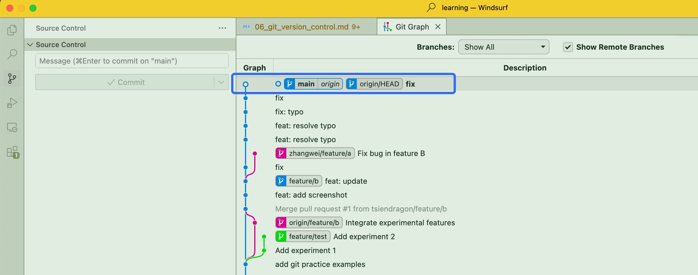
# 小红：从最新的 main 分支创建功能分支
git checkout main
git pull # 确保 main 是最新的， 一般切换新分支之前，先pull以免落后，导致conflict
git checkout -b xiaohong/feature/register
# 张伟：从最新的 main 分支创建功能分支
git checkout main
git pull # 确保 main 是最新的
git checkout -b zhangwei/feature/login
- 张伟开始开发用户登录功能：
# 张伟：从最新的 main 分支创建功能分支
git checkout main
git pull # 确保 main 是最新的
git checkout -b zhangwei/feature/login
# 张伟：开发登录功能
echo "登录页面设计" > experiment/login.txt
git add experiment/login.txt
git commit -m "Add login page design"
echo "登录验证" >> experiment/login.txt
git add experiment/login.txt
git commit -m "Add login validation"
目前状态应该是 zhangwei/feature/login 会提前main 两个提交
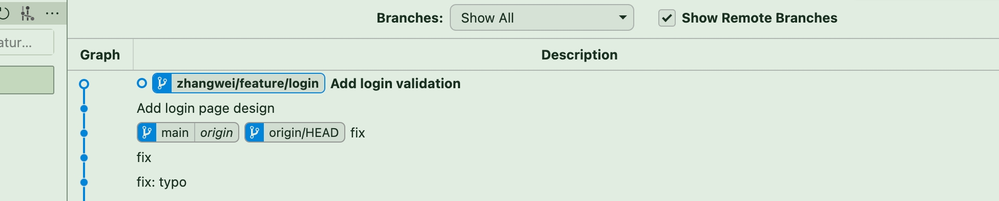
张伟提交merge request 到 main 并合并。
# 张伟：提交并合并功能
git push origin zhangwei/feature/login
# 创建 merge request
# 正常是在github 页面提交merge request，进行review 再合并，请查阅第一个例子。下面是直接在命令行合并，模拟这个工作。
git checkout main
git pull # 再次确保 main 是最新的
git merge zhangwei/feature/login
git push origin main
merge 之后，main 保持和zhangwei/feature/login 同步 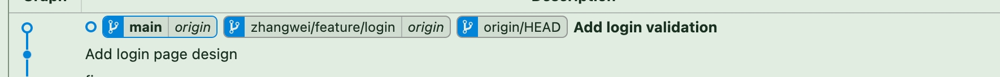
- 同时，小红在开发注册功能：
我们假设小红和张伟都在开发注册功能。 切换到小红的分支工作
小红独立在自己的分支工作。
# 小红：开发注册功能
echo "注册页面设计" > experiment/register.txt
git add experiment/register.txt
git commit -m "Add register page design"
echo "注册验证" >> experiment/register.txt
git add experiment/register.txt
git commit -m "Add register validation"
# 小红也需要在login.txt 上做一个修改，但是她还不知道张伟的修改
echo "注册后登录验证" >> experiment/login.txt
git add experiment/login.txt
git commit -m "Add login validation after register"
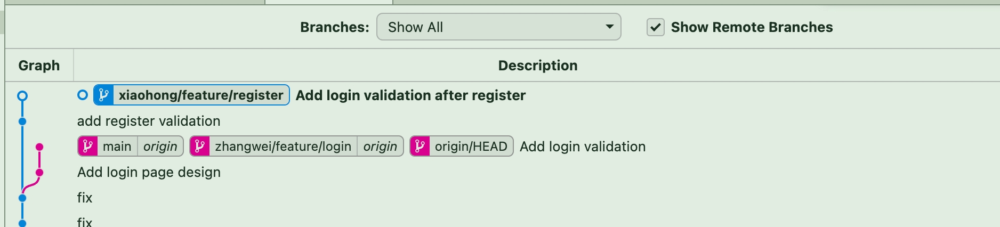
- 小红提交注册功能：
# 小红：获取最新的 main 分支并更新自己的功能分支
git checkout main
git pull
git checkout xiaohong/feature/register
git merge main # 将最新的 main 合并到自己的功能分支
这时可能会出现merge conflict, 因为小红和张伟都在修改register.txt，所以会出现conflict。
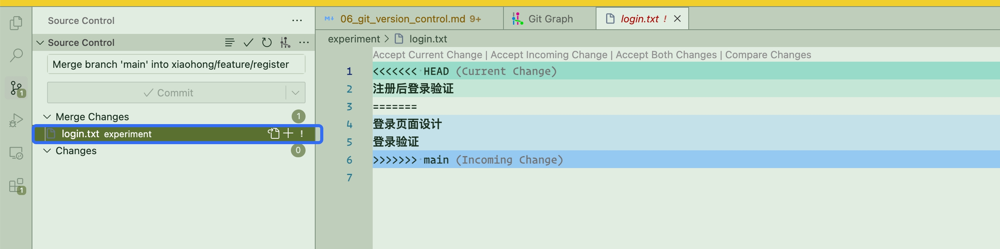 在source control 中，点击conflict 文件, 查看冲突的内容，在编辑器中解决掉conflict。
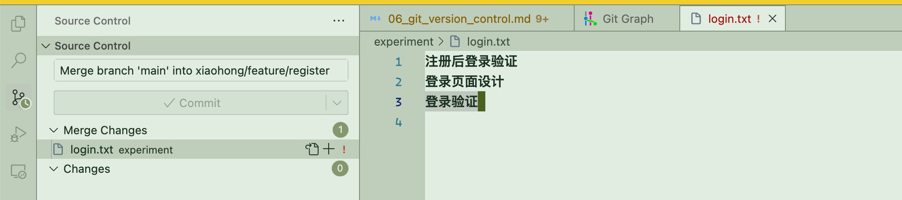
解决完之后，提交合并的commit
# 小红：提交并合并功能
git push origin xiaohong/feature/register
# 创建 merge request
git checkout main
git pull
git merge xiaohong/feature/register
git push origin main
4. git cherry-pick
git cherry-pick 用于从一个分支中挑选特定的提交（commit）并应用到当前分支，而不影响其他提交。它适用于以下场景：
跨分支迁移单个或多个提交（如将 feature 分支的某个提交应用到 main）。 修复 Bug（挑选修复 Bug 的 commit，合并到生产环境）。 避免合并整个分支（只想要特定的更改，而不是整个分支的所有提交）。
现在模拟一个例子，让我们看看如何使用 git cherry-pick。
张伟在工作是开发登录功能，小红在开发注册功能。张伟发现小红的密码检查函数很实用，想要在登录功能中使用。
准备工作：首先创建并设置两个分支的内容。
小红的分支
# 小红创建新分支
git checkout main
git checkout -b xiaohong/feature/4
# 创建实验目录
mkdir -p experiment
# 创建工具文件
echo "1. 邮箱格式检查函数" > experiment/utils.txt
git add experiment/utils.txt
git commit -m "Add email check function"
echo "2. 密码强度检查函数" >> experiment/utils.txt
git add experiment/utils.txt
git commit -m "Add password check function"
张伟的分支
# 张伟创建新分支
git checkout main
git checkout -b zhangwei/feature/4
# 确保实验目录存在
mkdir -p experiment
# 创建登录功能文件
echo "登录页面设计" > experiment/login.txt
git add experiment/login.txt
git commit -m "Add login page design"
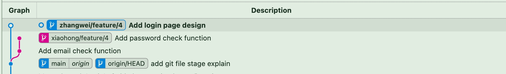
张伟发现小红的密码检查函数很实用，想要在登录功能中使用，但是还不想合并小红的所有提交。。
# 查看小红分支的提交历史
git log xiaohong/feature/4
>>>
>>> commit d8f6173bec335204dfe18866a05d9fa9af66147d (xiaohong/feature/4)
>>> Author: lilong <TsienDragon@outlook.com>
>>> Date: Thu Jan 30 16:47:38 2025 +0800
>>>
>>> Add password check function
>>>
>>> commit 925abd9a8a1f842159d8defb0d721891ef50a221
>>> Author: lilong <TsienDragon@outlook.com>
>>> Date: Thu Jan 30 16:47:05 2025 +0800
>>>
>>> Add email check function
>>>
>>> commit f4a078a916e587d40f0368930318571d66e7f96d (origin/main, origin/HEAD, main)
# 张伟要把小红实现的邮箱验证的功能pick 过来，找到邮箱验证函数的提交 hash
git checkout zhangwei/feature/4 # 确保在张伟的分支
git cherry-pick 925abd9a8a1f842159d8defb0d721891ef50a221 # 925abd9a8a1f842159d8defb0d721891ef50a221 是密码检查函数的提交 hash
# 你可以使用 commit 的前几位（通常 7-10 位即可），只要它在当前仓库中是唯一的
# 或者用 git cherry-pick 925a
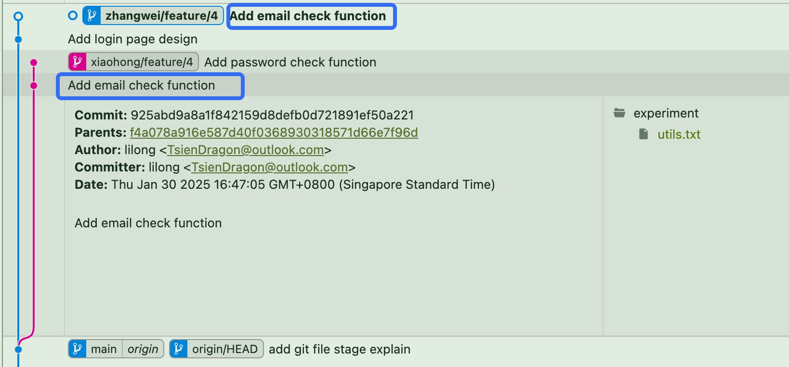
如图所示 这两个commit 的内容一摸一样，但是他们的commit hash是不一样的。
5. git rebase
在 Git 版本控制中，git rebase 是一个强大的命令，主要用于整理提交历史，使其更加线性和清晰 准备工作：模拟一个需要进行 rebase 的场景。
本文介绍了 Git Rebase 的典型使用场景，并通过一个 张伟（开发支付功能）与小红（开发用户资料功能）并行开发 的案例，展示了如何使用 git rebase 来整理 Git 历史，使提交记录更清晰和线性。
张伟和小红先同时从当前的main 分支基础上，先独立开发
张伟开发
# 创建并切换到功能分支
git checkout main
git pull
git checkout -b zhangwei/feature/payment
# 在功能分支上进行一些提交
echo "添加支付按钮" > experiment/payment.txt
git add experiment/payment.txt
git commit -m "Add payment button"
echo "添加支付处理函数" >> experiment/payment.txt
git add experiment/payment.txt
git commit -m "Add payment handler"
小红开发
# 小红在张伟开发期间，完成了用户资料更新功能
git checkout main
git pull
git checkout -b xiaohong/feature/profile
# 添加用户资料更新功能
echo "添加用户头像上传" > experiment/profile.txt
git add experiment/profile.txt
git commit -m "Add avatar upload"
echo "添加个人信息编辑" >> experiment/profile.txt
git add experiment/profile.txt
git commit -m "Add profile editor"
小红先提交合并到 main
现在main同步了小红的用户资料更新功能，但是张伟的支付功能还没有同步，所以需要在zhangwei/feature/payment 分支上进行rebase。 如果直接使用merge 会让main 分支出现分叉。如果想保持分支结构为线性，则需要用到rebase。
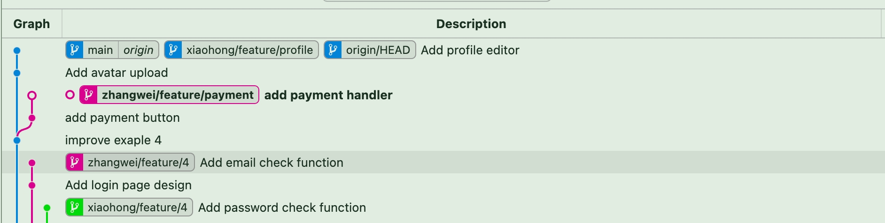
张伟随后开始使用 rebase 合并到自己的分支
# 首先更新 main 分支
git checkout main
git pull
# 切回功能分支并执行 rebase
git checkout zhangwei/feature/payment
git rebase main
# 保持了zhangwei 分支和main的线性结构， 再提交merge request
# 如果有冲突，解决后继续
git add .
git rebase --continue
# 因为 rebase 改变了历史，需要强制推送
git push --force-with-lease origin zhangwei/feature/payment
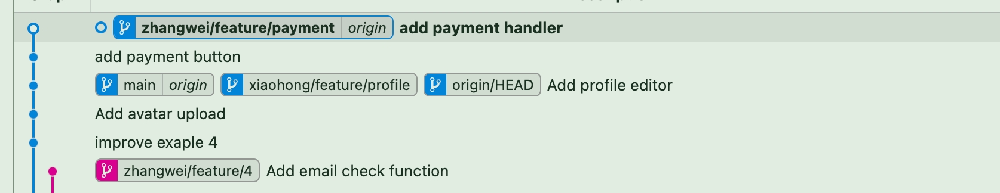
现在zhangwei/feature/payment 分支和main 分支都是线性的了，如上图
登陆github 页面，创建merge request，按下图所示依次执行。 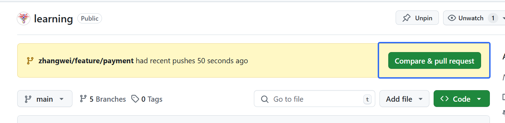
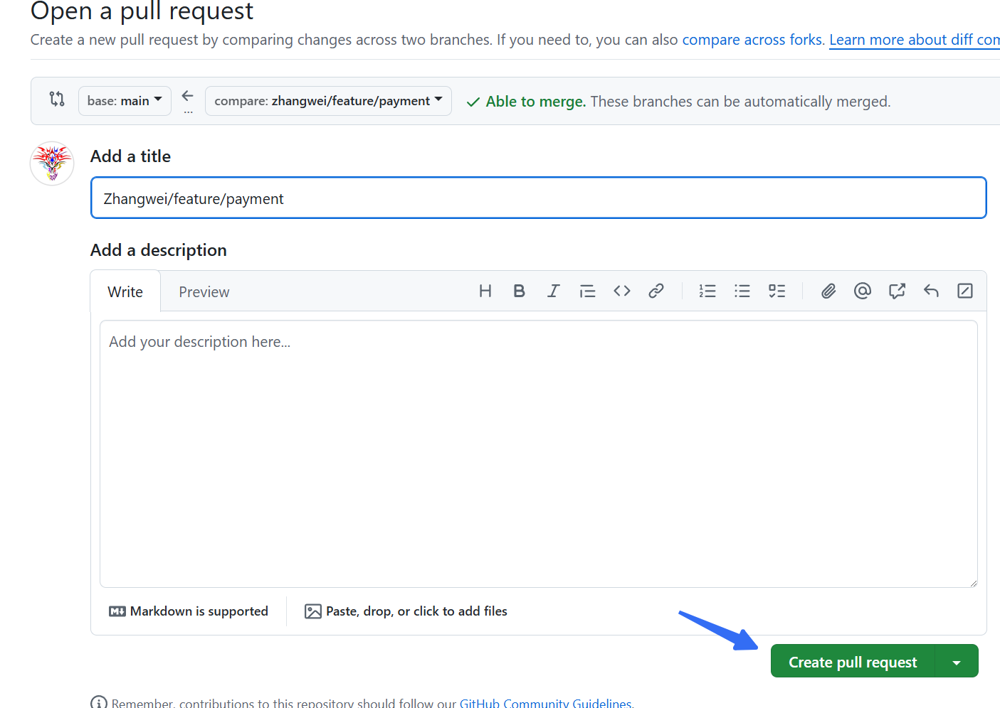
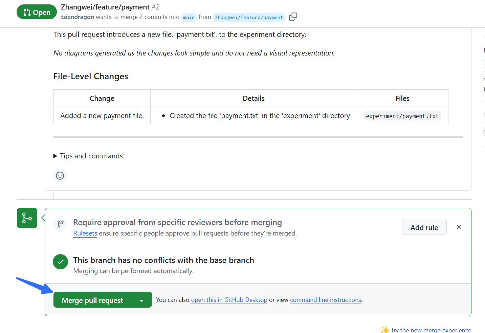 注意需要在merge request 中选择rebase and merge选项 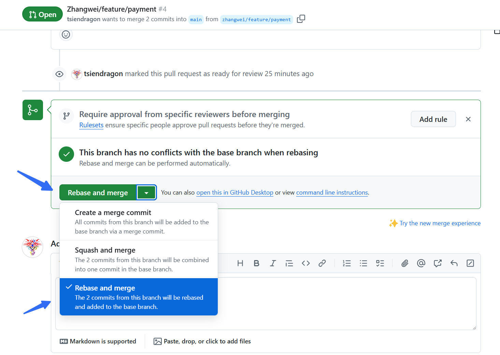 如果是merge 则main 就会出现分叉 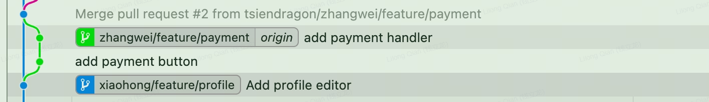
本地同步跟新
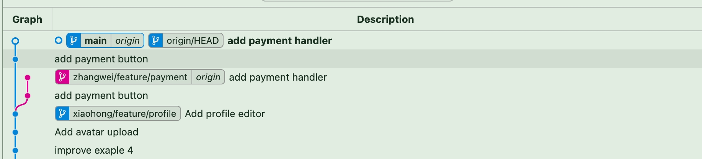现在main 分支也是线性了 同时同步了zhangwei 分支的更新.
注意事项：
- 不要在公共分支上使用 rebase（比如 main 分支）
- 强制推送要谨慎使用，确保不会影响他人的工作
- 如果遇到复杂的冲突，可以使用
git rebase --abort取消操作 - 建议在 rebase 之前创建一个备份分支：
6. git reset
一个简单的例子
刚开始的状态 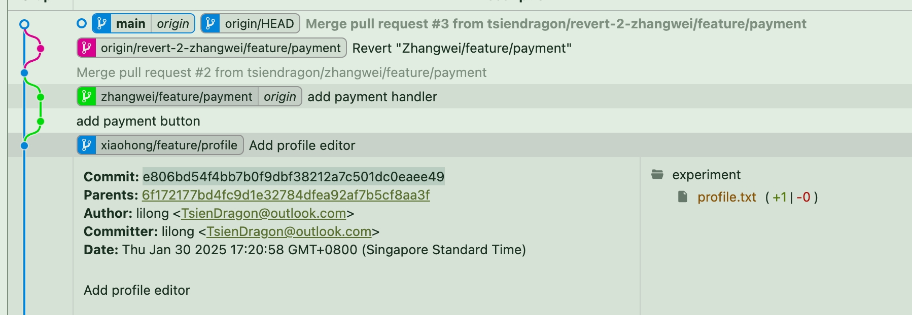
想把main reset 到合并之前的状态
找到合并之前的commit hash
rest之后的状态 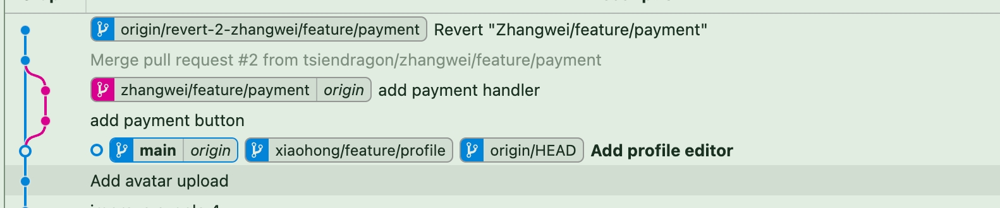更进一步，git reset 有三种模式：
--soft：仅重置 HEAD 到指定提交，保留暂存区和工作目录的更改--mixed（默认）：重置 HEAD 和暂存区，保留工作目录的更改--hard：重置 HEAD、暂存区和工作目录，完全回到指定提交的状态
准备工作：创建一个场景来演示不同类型的文件状态。
- 初始设置：
# 创建新分支
git checkout main
git checkout -b zhangwei/feature/reset-demo
# 创建实验目录
mkdir -p experiment
# 第一个提交：添加项目配置
echo "login" > experiment/login.txt
echo "项目配置文件" > experiment/config.txt
git add experiment/config.txt
git add experiment/login.txt
git commit -m "Initial commit: Add config file"
# 第二个提交：添加用户模块
echo "用户登录功能" > experiment/user.txt
git add experiment/user.txt
git commit -m "Add user login module"
# 第三个提交：添加订单模块
echo "订单处理功能" > experiment/order.txt
git add experiment/order.txt
git commit -m "Add order processing module"
# 第四个提交：更新配置
echo "更新配置参数" >> experiment/config.txt
git add experiment/config.txt
git commit -m "Update config settings"
# 查看提交历史
git log --oneline
# 会显示类似：
# abc1234 Update config settings
# def5678 Add order processing module
# ghi9012 Add user login module
# jkl3456 Initial commit: Add config file
现在准备演示不同的文件状态：
# 1. 已暂存的文件
echo "已暂存的文件" > experiment/staged.txt
git add experiment/staged.txt
# 2. 已修改但未暂存的文件
echo "新的订单功能" >> experiment/order.txt
# 3. 未跟踪的文件
echo "未跟踪的文件" > experiment/untracked.txt
mv experiment/config.txt experiment/configs.txt
rm experiment/login.txt
git mv experiment/register.txt experiment/register_func.txt
- 查看当前状态：
Changes to be committed:
(use "git restore --staged <file>..." to unstage)
renamed: experiment/register.txt -> experiment/register_func.txt
new file: experiment/staged.txt
Changes not staged for commit:
(use "git add/rm <file>..." to update what will be committed)
(use "git restore <file>..." to discard changes in working directory)
deleted: experiment/config.txt
deleted: experiment/login.txt
modified: experiment/order.txt
Untracked files:
(use "git add <file>..." to include in what will be committed)
experiment/configs.txt
experiment/untracked.txt
在vscode 的source countrol 中也可以看到各个文件的状态
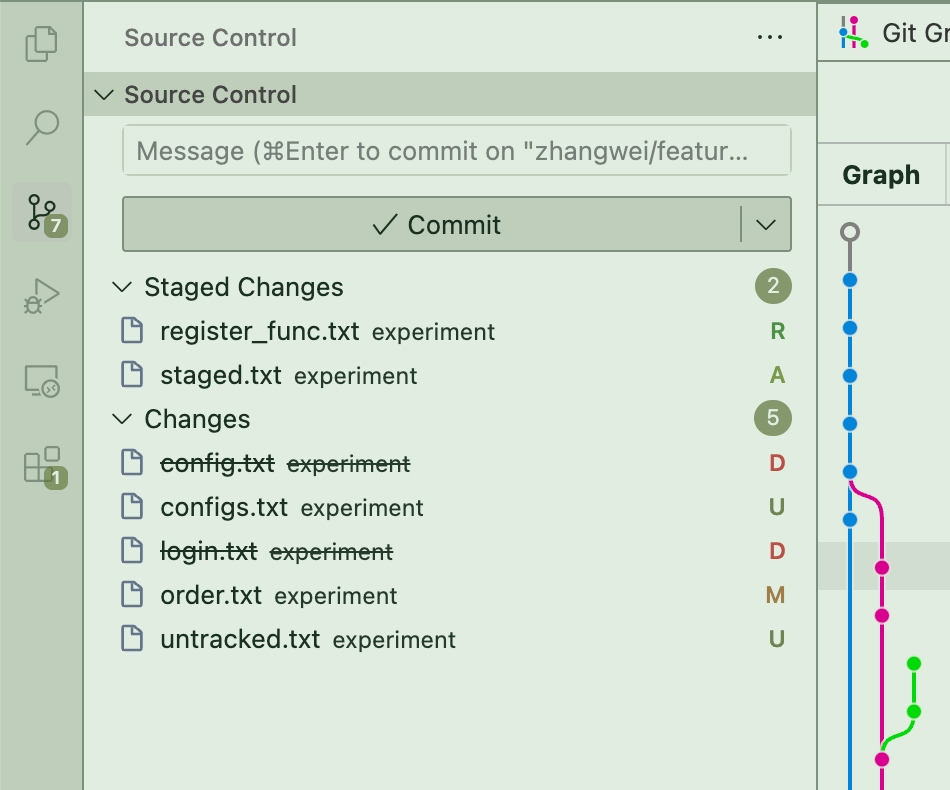
- R 表示renamed
- M 表示modified
- D 表示deleted
- U 表示untracked
- A 表示added
1. 使用 git reset --soft：
在 Git 命令 git reset --soft HEAD~1 中，HEAD~1 的含义如下：
- HEAD ：指的是当前分支的最新提交（即 HEAD 指针指向的提交）。
~1：表示“向上回退 1 次提交”（即HEAD的上一个提交，也就是HEAD^）。-
HEAD~1等同于HEAD^，表示回退 1 次提交。 -
HEAD~2表示回退 2 次提交，以此类推。
例子
假设你的 Git 提交历史如下：
执行git reset --soft HEAD~1 后，HEAD 会回退到 B，但不会修改暂存区（staging area）和工作区（working directory）：
但 C 的更改仍然存在于暂存区，意味着你可以重新提交它或进行其他操作。不同的 git reset 选项：
- --soft：只回退 HEAD 指针，提交的更改仍然在暂存区（git status 会显示文件仍处于 "Changes to be committed" 状态）。
-
--mixed（默认）：回退HEAD指针，并且撤销git add的操作，但不会影响工作目录。 -
--hard：彻底回退提交，并且删除所有代码改动（慎用）。 你可以根据实际需求选择合适的git reset选项。
现在的状态
Changes to be committed:
(use "git restore --staged <file>..." to unstage)
modified: experiment/config.txt
renamed: experiment/register.txt -> experiment/register_func.txt
new file: experiment/staged.txt
Changes not staged for commit:
(use "git add/rm <file>..." to update what will be committed)
(use "git restore <file>..." to discard changes in working directory)
deleted: experiment/config.txt
deleted: experiment/login.txt
modified: experiment/order.txt
Untracked files:
(use "git add <file>..." to include in what will be committed)
experiment/configs.txt
experiment/untracked.txt
使用 git reset --mixed（默认模式）：
先恢复各种文件的状态
git reset --hard HEAD@{1}
git mv experiment/register.txt experiment/register_func.txt
echo "staged" >> experiment/staged.txt
git add experiment/staged.txt
echo "change user" >> experiment/user.txt
git add experiment/user.txt
echo "change order" >> experiment/order.txt
rm experiment/login.txt
各种文件的状态 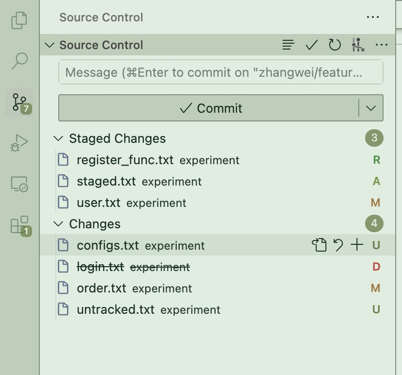
git reset HEAD~2 # 或 git reset --mixed HEAD~1
git status
>>> Changes not staged for commit:
>>> (use "git add/rm <file>..." to update what will be committed)
>>> (use "git restore <file>..." to discard changes in working directory)
>>> modified: experiment/config.txt
>>> deleted: experiment/login.txt
>>> deleted: experiment/register.txt
>>> modified: experiment/user.txt
>>> Untracked files:
>>> (use "git add <file>..." to include in what will be committed)
>>> experiment/configs.txt
>>> experiment/order.txt
>>> experiment/register_func.txt
>>> experiment/staged.txt
>>> experiment/untracked.txt
清除了staged 修改，但是其他的文件状态没有变化，staged 变成了 un-staged. user.txt 变成了un-staged, 因为user.txt 之前已经track过了。staged.txt 变成了untracked, 因为staged.txt 没有track过。register_func.txt 变成了untracked, 因为register_func.txt 没有track过, 因为register的commit 已经被撤回了，当前的commit 没有track 过register.txt 和register_func.txt，后者是从register.txt 重命名而来。
使用 git reset --hard
丢弃所有修改
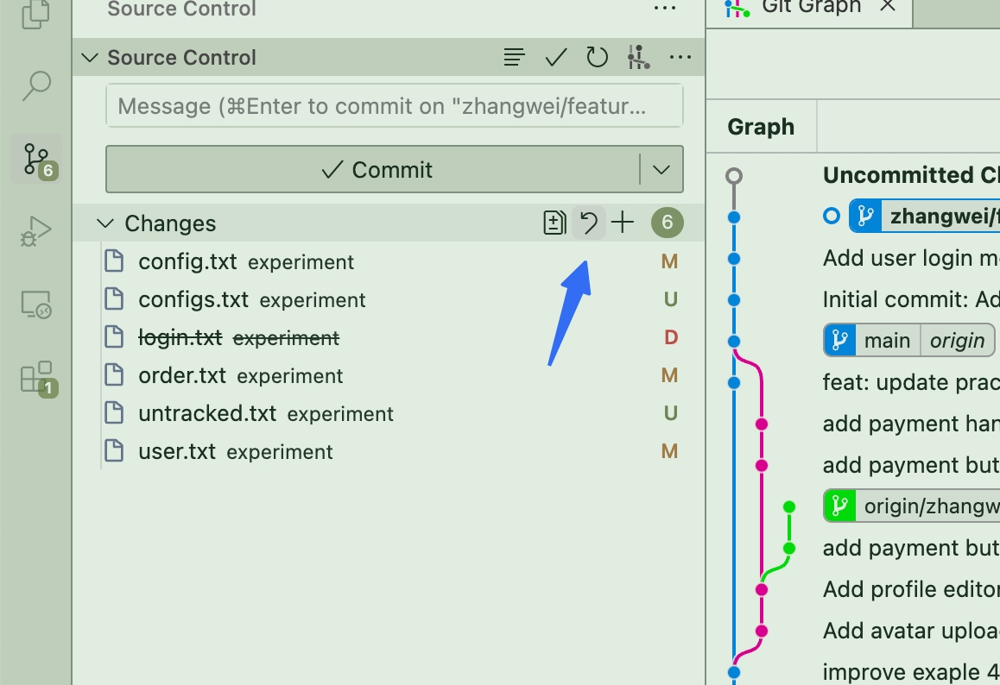
现在所有修改的都没有了 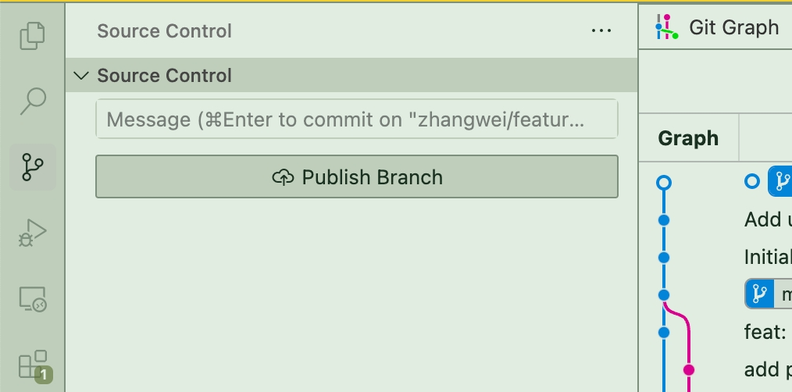
再模拟各种各种文件状态
git mv experiment/register.txt experiment/register_func.txt
echo "staged" >> experiment/staged.txt
git add experiment/staged.txt
echo "change user" >> experiment/user.txt
git add experiment/user.txt
echo "change order" >> experiment/order.txt
rm experiment/login.txt
echo "untracked" >> experiment/untracked.txt
echo "config update 2" >> experiment/config.txt
目前的状态
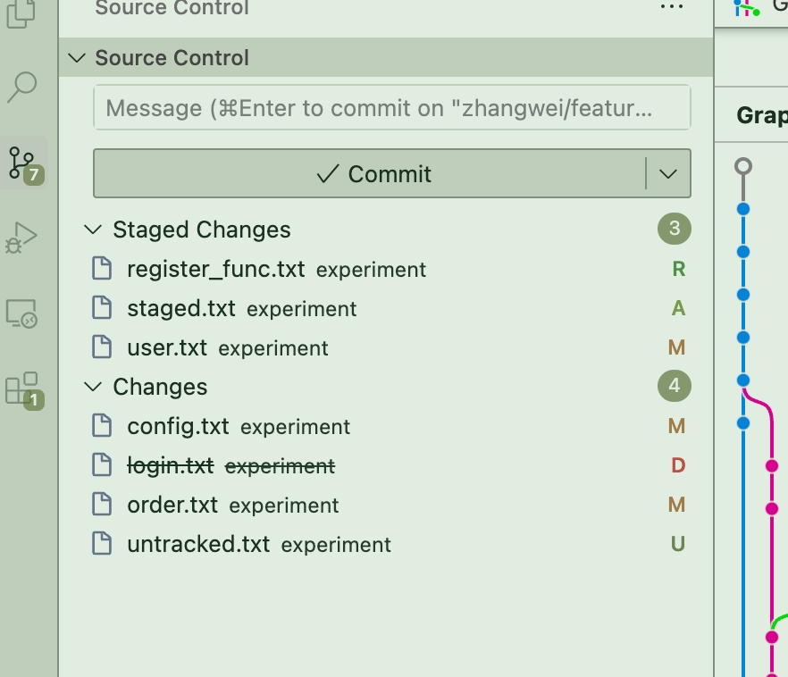
config.txt 内容 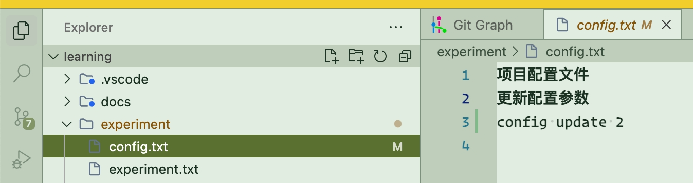
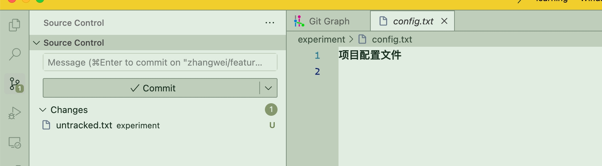
reset 之后只剩下两个commit，同时source control 只剩下untracked.txt
Git reset 命令对不同文件状态的影响
| 文件状态 | git reset --soft | git reset --mixed | git reset --hard |
|---|---|---|---|
| HEAD（提交历史） | 回退到指定提交 | 回退到指定提交 | 回退到指定提交 |
| 暂存区（Staging Area） | 不变 | 清除（回到 HEAD 状态） | 清除（回到 HEAD 状态） |
| 工作区（Working Directory） | 不变 | 不变 | 恢复为 HEAD 状态（丢弃已跟踪文件的修改） |
| 已提交的文件（Tracked, Unmodified） | 不变 | 不变 | 不变 |
| 已修改但未提交的文件（Tracked, Modified） | 不变 | 不变 | 丢弃修改，恢复为 HEAD 版本 |
| 已暂存但未提交的文件（Tracked, Staged） | 保持暂存 | 撤回暂存，但保留修改 | 丢弃修改，恢复为 HEAD 版本 |
| 未跟踪的文件（Untracked） | 不变 | 不变 | 不变（不会删除） |
| 忽略的文件（Ignored） | 不变 | 不变 | 不变 |
补充
- --soft：只回退提交历史 ，暂存区和工作区保持不变 。适用于撤销最近的提交但保留代码状态（类似 git commit --amend）。
-
--mixed（默认）：回退提交历史并清除暂存区 ，但不影响工作区 。适用于回退提交但保留代码修改，重新git add之后可以重新提交。 -
--hard：回退提交历史、清除暂存区、重置工作区 ，即完全恢复到指定提交的状态 ，已修改但未提交的更改会被丢弃 （慎用！ ）.
其他相关命令 如果 git reset --hard 之后发现误操作，可以尝试：
reset 方式，以避免数据丢失。
注意事项：
--hard是不可逆的，使用前要确保不需要保留任何更改- 未跟踪的文件不受
git reset影响 - 如果不确定，可以先创建分支备份：
- 可以使用
git reflog查看操作历史，在意外重置后恢复：
git reset HEAD@{1} 也可以使用 --soft、--mixed 和 --hard 选项，作用与 git reset
因此在实际开发中，尽量将工作及时commit 和push，避免出现丢失数据的情况。实在要立马操作，不方便commit 的时候，可以用stash 暂存，然后在合适的时候再进行操作